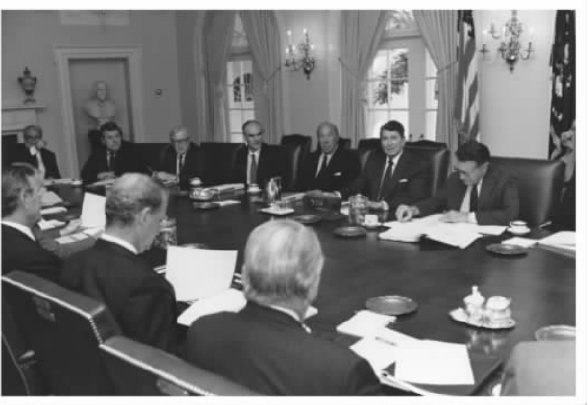
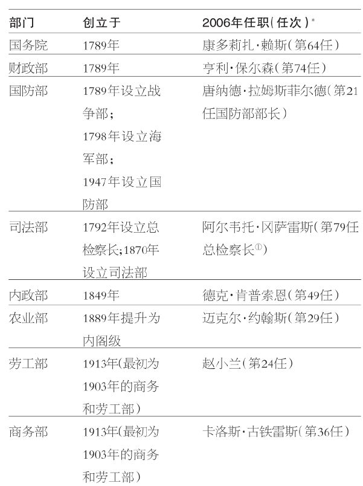
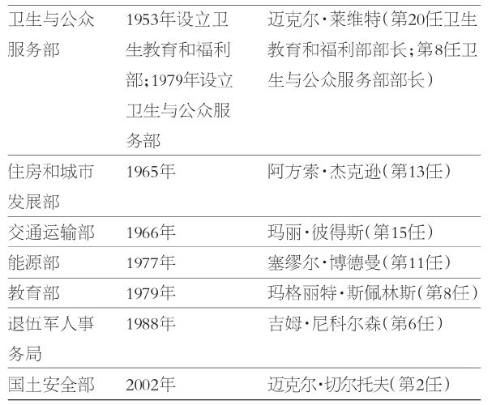
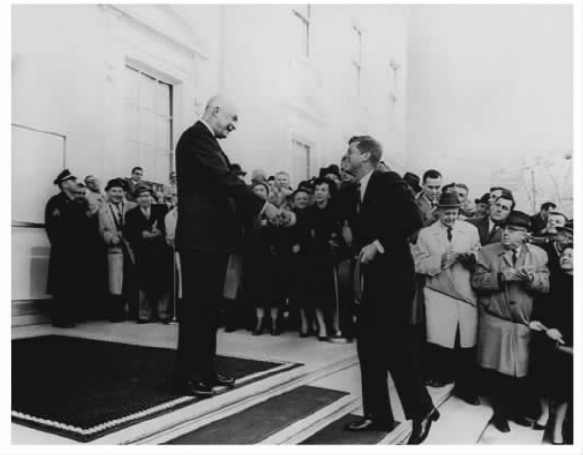

总统们进入的通常是业已运转艰难的政府。分权体系必然以机构的各组成部分之间不同的任期和工作习惯为特征。民选官员来来往往，通常依循着不同的时间框架。文官则继续“官僚化”，法官继续从事审判，游说集团和记者群体也一如既往。
高层的变动毫无疑问至关重要，但是已经存在的施政方案和已经在职的人员说明了华盛顿发生的大多数事情。并且，以管理的项目和支出的金钱来衡量，工作负担在增加。直到1962年，联邦政府的支出达到1000亿美元。20年后，政府支出超过7000亿美元；再过20年之后，也就是2002年，支出突破2万亿美元大关。这40年中有9位总统任职，每位总统都继承了前任总统经历过的支出膨胀的责任。
为管理耗资数十亿甚至数万亿的项目，庞大的官僚体系应运而生。许多这类工作在内阁各部门中完成。1945年第二次世界大战结束之时，有10个部门，其中2个（战争部与海军部）随即合并为国防部。在随后的60年中，增加了5个部门，每一个都代表新的或者大为提升的联邦事务（例如卫生、教育、能源与国内安全等）。在小布什任期内，美国卫生与公众服务部的支出超过卡特总统任期内整个联邦政府的支出；国防部支出数额紧随其后。
未来的总统被期望能够掌管这个利维坦式的庞然大物。在一个由各州联邦单位、项目、规则、程序，以及与其他国内和国外政府机构的关联所组成的迷宫中，他们要为所发生的一切负责。当新当选的总统审慎考虑踏上职位、接管事务这样的任务时，他们也同时观察卸下职务的人——那些精于为留驻华盛顿的政府常任雇员担负责任的人。新总统及其幕僚与那些离任者大多数情况下分属不同政党，因此在交接之时很少说些什么。新的执政团队必须边干边学。并且，所干的工作就是要使总统班底有足够的能力，为政府中发生的一切承担责任。以下的部分是必须要做的事。
想象一幅画面，许多小三角形在一个大三角形中跳跃。现在想象，三角形的顶部被移除，构成了梯形。这些几何意象传达了高层发生变化时所出现的情形。白宫清空了，各个部门与机构领导的办公室也是如此。总统拥有宪法赋予的职责，“经征求参议院的意见和同意”（第二条第二款）来填充许多这类位置。在19世纪的大部分时期中，政治分赃制（patronage），即对党人的任命，深入地延伸到各个部门和机构中。随着《彭德尔顿法》的通过，职业的公务员机构得以创立，从此将任命限制在了高层领导职位上。
总统拥有权力进行多批人事任命。最为重要的是任命白宫幕僚、内阁和其他高级行政官员、机构首领和其他高层职位、规制性委员、委员会成员以及大使与领事。联邦法官的任命权也被授予总统，但是必须等待空缺出现。联邦法官并不会随着新总统的当选而大规模退出。总统并“在参议院休会期间，如遇有职位出缺，有权任命官员补充所有缺额”（第二条第二款），这是允许总统临时任命应由参议院提名的官员的一项条款。
如前面所指出的，在建国后的第一个百年中，政治分赃制非常普遍，并且这一制度现在依然主导着主要的政策职位以及总统的私人幕僚。人们于是期待，总统将任命那些表现出对政党及其领袖的支持的人。然而，近几十年来，有人呼吁总统应该在内阁中至少任命一位他党成员。二战后的大多数总统都试图如此行事。因此，举例来说，来自缅因州的共和党人、参议员威廉·科恩得以担任克林顿任期的国防部长；来自加利福尼亚州的共和党人、前众议员诺曼·峰田被任命为小布什总统的运输部长（峰田也是克林顿总统的商业部长）。
只是近来，性别、种族和民族多元性才成为评价内阁的一个标准。从1945年到1977年（从杜鲁门到尼克松——福特），97%的内阁部长是高加索人 [31] 。艾森豪威尔任命了一位女性，约翰逊任命了一位非裔美籍男性，福特总统任命了一位女性和一位非裔美籍男性。这些任命中的每一项都是为了接替前任或者领导一个新建部门。这段时期四位总统的最初内阁清一色都是白人男性。
1977年到1989年之间的内阁在某种程度上更为多元。卡特总统任命了三位女性，包括一位非裔美籍女性。三位中的两位是初始内阁成员。里根任命了两位女性，并且还任命了非裔美籍男性与西班牙裔美籍男性各一位。
自1989年以来，内阁职位的多样性成为衡量未来总统人事任命的标准。从1945年到2005年，76%的多样化人事任命就是在这第三段时期进行的：老布什总统作出6次这种任命；克林顿作出16次，小布什作出13次。白人男性主导着第一段和第二段时期（分别为97%和87%）。在第三段时期，这个比例只有57%。
初始内阁成员任命的数目也大幅增加：老布什在其初始内阁中任命了3位，克林顿任命了8位，小布什任命了7位。在克林顿的内阁中，白人男性处于少数地位。在小布什的内阁中，白人男性占据一半。鉴于这种趋势代表着女性和少数族裔更广泛的政治参与，我们没有理由期待它会逆转。

图4.1 里根总统在白宫内阁会议厅与内阁成员会晤。（国家档案与记录管理局）
另一个重要的变化是，多元化的人事任命开始指向克林顿和小布什的内阁高层职位。克林顿首次任命女性出任总检察长（珍内特·雷诺）和国务卿（马德琳·奥尔布赖特）。小布什首次任命非裔美籍男性和女性担任国务卿（科林·鲍威尔与康多莉扎·赖斯）以及首位西班牙裔美国人担任总检察长（阿尔韦托·冈萨雷斯）。
竞选不同于治理。以下是里根总统的一位幕僚对两种活动的比较：“［竞选］是我们与他们之战。是共和党人对民主党人之战。这与国家治理大相径庭……治理中没有多少需要祈祷‘万福马利亚’的大麻烦。它每次损坏五到十码，并且让人们在你的场地一边玩耍。”另一位总统幕僚认为竞选是一场“只有一个舞台的马戏”，聚焦于候选人以及宣布获胜者的确定一天。与其相反，治理是一场“有着万千舞台的马戏” [32] 。
当然，两种活动不同并不意味着它们毫不相关。总统竞选决定着哪个团队可以执政，并且影响着他们如何执政。一般而言，竞选提供了竞争性的政策重点，或者提供一些政策建议，在这些建议中候选人们能就重点事项达成一致。总统候选人及其班底创造、管理着一个全国性组织，并且经常与国会竞选和州长竞选相交叉。这样，候选人们就有机会去了解政策议题、其他人的偏好、工作人员能力以及组织有效性等。在这些意义上，竞选具有让获胜者为治理作好准备的潜在功能。
也存在这种情况，即治理影响竞选。候选人在巡回竞选过程中搜寻议题。大多数议题都是从政府正在从事的工作中浮现出来的。例如，2004年总统竞选聚焦于反恐战争和伊拉克战争、国内安全、能源、社会保障、赤字和税收等。相应地，小布什第一任期的治理设置了竞选议程，两组候选人都检验了公众对这些议题的反应。获胜者（小布什以微弱优势获胜）于是将学到的教训应用于第二任期的治理。
同时，国会成员大多开展单独的竞选活动，其议题一般是为各州和地方选区量身定做的。总统和国会将竞选经验与教训运用到国家治理上的效果，为下一次选举设置了新的议程。这两项功能——治理和竞选——是实实在在又持续不断地相互连接的，正如人们在代议制民主之下所期待的那样。
在以前，总统并不愿意广泛地巡回奔波来为其施政方案确立支持。历史上存在相关事例，著名的如伍德罗·威尔逊支持国际联盟的全国巡回。比较普遍的是募款旅行以及电台或电视演讲。约翰逊总统曾说：“有时……登上报纸和深入民心的唯一方法是与国会开战，对他们恶语相向，展示我的脾气。”在大多数情况下，他相信他应该“从内部工作”，因为走到外面去很可能会疏远国会议员。 [33]
但是，1965年，约翰逊拥有两项有利条件：以压倒性的优势获胜，并且民主党占国会绝大多数席位。从那以后，没有哪位总统有过如此有利的政治地位。因此，随着通讯手段的发展，总统们越来越多地走向公众以寻求支持。为了更好地完成这项任务，总统将竞选顾问请到身边。最近的例子是小布什身边的卡尔·罗夫，担任副幕僚长，既在政策也在竞选方面为总统提供建议。毫不奇怪，罗夫已经成为强烈批评的目标，同样，这也将是未来在白宫中当差的政治顾问们的命运。为什么呢？因为他们代表着竞选与治理的融合，而许多批评家相信这两者应该分开。
当选的总统有大约十个星期来组织并准备其直属机构。此时，他们设置政策重点；作出关键的人事任命；确立与国会、文官、媒体以及其他政府机构之间的联系；并且，准备搬进白宫及其他政府建筑里已经清空的办公室中。这是一项极其复杂的任务，在新总统当选后，这项任务一般都会涉及政党之间的轮换（第二次世界大战后，8次政府过渡中有7次政党轮换）。政策重点的设置一般会遵循竞选过程中提出的主张。毕竟，竞选是与议程相关的。议程构成了全部辩论的基础。然而，千真万确的是，按照日程而非议题的出现来进行的选举，会在政策重点的先后次序上造成实质性的变化。1968年，没有人会怀疑结束越南战争是尼克松的政策重点；或者1976年，也没有人怀疑能源问题和政府伦理问题是卡特政府优先考虑的事。经济问题在1980年成为里根政府的首要任务，并且在1992年再次成为克林顿政府的首要任务（“笨蛋，问题在于经济”）。不那么清晰的，是1988年老布什的政策重点，那次的竞选被指责为缺乏议题；还有2000年小布什的政策重点，当时对好几个议题都进行了辩论，但是没有哪个议题在公众中被确立为重点。布什自己将减税视为最优先的政策。确立一个清晰主题是向治理阶段过渡的显著优势，因为它设定了此一总统任期的目标和方向，也有助于确定谁将得到任命。
可以理解的是，过渡期中的媒体注意力会聚焦于关键的人事任命。人们有强烈的兴趣来关注“盒子”，即关键的内阁职位和总统的主要幕僚的填充。对许多期望得到任命的竞选幕僚而言，过渡期是一个令人焦虑的时段。并且，与政府有业务往来的集团，以及与白宫和内阁各部有合作关系的国会各委员会及其工作人员，也兴趣高涨。表4.1列出了2006年秋季时的内阁各部门及其部长，包括总检察长。
在作出人事任命方面，已经形成了一些惯例和次序，如果在选举之前已经对过渡期有过规划，大多数人事任命都会得到有效地执行。其中部分规则如下：选择一位具有联邦政府工作经验的任命主管，快速行动，尽早地任命白宫幕僚和主要的内阁职位（国务院、财政部、国防部、司法部），尽快确定亲密顾问的未来，使人事任命代表政策议题，将竞选善后的各项职能从人事任命中区分出来。对继任者而言，这些实践经验合在一起构成了头脑清醒且有逻辑的规划，施政方案与人员得到完美协调，传达出清晰的使命感。以这些标准来衡量，肯尼迪（1960）、里根（1980）和小布什（2000）过渡期得到很高分数，卡特（1976）、老布什（1988），以及特别是克林顿（1992）过渡期得到较低分数。顺利的过渡并不能保证有效的总统任期，但是它的确更有可能创造一个有效的开端。
“清白无辜直到被提名”，这是老布什的顾问伯登·格雷描述的人事任命过程。总统人事任命专家保罗·莱特曾说：“人事任命过程本身便是”说服优秀管理人才进入政府的“最大障碍” [34] 。被提名人必须通过联邦调查局的背景调查，提交详细的财务公开表格，由参议院委员会人员进行审查，在确认听证会上接受质询，并且由媒体和利益集团密切监督。所有这些检查都会耗费时间。在关键岗位，尤其是高级行政官员的填补方面的拖延，对即将承担治理责任的新总统而言，会使富有挑战性的任务变得更加复杂。
表4.1 2006年的内阁各部门和任职人员


①美国司法部是在总检察长的基础上设立的。司法部成立后，由总检察长任部门长官。总检察长（Attorney General）也有人译为“司法部长”。——译注
* 如果任职人员在该位置上任职时间超过一位总统任期，并不重复计数。
来源：作者汇编信息自The United States Government Manual，2005-2006（Washington，DC：Government Printing Office，2005）.
党派问题也增加了对新行政团队的考验。公认的一点是，总统应该能够任命自己中意的人。因此，参议院对大多数任命都会同意。然而，近几十年来，更常见的情形是，总统作出的任命必须得到另外一党控制的参议院的同意（如不同时间内尼克松、福特、里根、老布什、克林顿和小布什面临的情形）。相应地，总统必须考虑被提名人遭到否决的可能性；例如，老布什高调提名来自得克萨斯州的共和党人、前参议员约翰·托尔到内阁中任国防部长。引人注目的是，托尔在参议院中的许多前同事投票反对这项任命。有趣的是，老布什接下来提名的是理查德·切尼，他后来成为老布什之子的副总统。
尽管遵循不同的程序，司法任命也变得非常富有争议。这些人事任命并不是建构总统制的一部分。相反，在任命“最高法院大法官”方面（第二条第一款 [35] ），他们代表总统宪法权威的运用；并且对“低级法院”法官的任命（第三条第一款），是由法律所规定的。这些任命是为了填补第三分支的职位空缺，并且实际上是终身任职，而不是与总统任期相符。

图4.2 一届政府向下一届政府过渡——从艾森豪威尔到肯尼迪（德怀特·艾森豪威尔图书馆）
与行政系统的人事任命一样，总统选定的大多数法官人选都能得到批准。但是，总统与参议院之间的政党分裂控制使得征求“意见和同意”的过程日益紧张，特别是对上诉法院和最高法院人选提名而言。人事任命可能被司法委员会搁置，或者在极少数情况下在参议院议席上被否决。在第108届国会（2003——2005）上，少数党派民主党动用阻挠议事（filibuster）程序，挫败了小布什对上诉法院法官的多项任命，这项程序到第109届国会（2005——2007）时经两党协商至少暂时停用了。
各直属机构已经组织完成，参议院已经同意对内阁的任命，新团队已经嵌入常任政府（由长期任职的官员、议员连任率高的国会和终身任职的法官组成），此后，总统们只能寄希望于各直属机构能够有效地形成合力。然而，这毫无保证。被任命者往往来自大相径庭的背景。在议会体制中，内阁一般由具有相似政治经历的部长组成——大多是议会议员。但是，这种情况并不会发生在美国的分权体系中。内阁各部长分别来自公共领域和私人领域的各种背景。例如，克林顿和小布什的第一届内阁分别来自商界和银行界、法律界、国会、教育界、州和地方政府以及军事部门。大多数人过去从未一起工作过；一些人甚至与总统并不熟识。此处的挑战是，如何确保若干彼此迥异的部门领导支持总统的施政方案，并且正确地实施这些方案。
一般情况下，白宫幕僚的确都拥有一些共同的政治经验。大多数人都在刚刚结束的竞选中非常活跃。这些竞选幕僚很少在第一届内阁中得到任命。然而，他们却非常熟悉总统的施政方案，以及这些方案在竞选中是如何形成的。因此，他们非常适合来监督各种提案是否及如何得到处理，是否及如何在各个部门和机构中得到推动，至少那些拥有十足的经验、非常了解华盛顿的人是适合的。
幕僚人员和各部门以及机构领导之间的冲突并不少见，这些人与资深文官的意见相左也不少见。当总统任命的人进入各自部门与机构的岗位，“走向本职”时，有时会得到一些参考意见。这里的关切是，他们会对现存的施政方案，而非对总统的改革议程表达更多的忠诚。
为总统服务是一项临时性的工作。毕竟，第二十二条修正案为总统任职设置了最多两个任期的限制。很少有内阁部长曾经任满两个任期，自从1951年任期限制修正案被批准以来，只有10位：艾森豪威尔任期有2位；肯尼迪——约翰逊任期有3位；里根任期有一位；以及克林顿任期有4位。人员变动率尽管在各个总统任期内有差别，但是的确很高。内阁部长在两个任期的政府（包括由副总统继任的，如肯尼迪——约翰逊和尼克松——福特政府）中任职月数的中位数，位于克林顿8年的48个月到尼克松——福特8年的24个月之间。尼克松和福特任期总共有43位内阁部长得到任命；艾森豪威尔任期只有20位。比较显著的是，总共有5位总检察长和5位劳工部长在尼克松和福特时期任职，对这两个职位而言平均任期只有19个月多一点。
怎么解释在人员流动方面的这些显著差异呢？无疑，总统的变更（如肯尼迪死亡以及尼克松辞职）意料之中地会引起人员流动，因为继任总统最终会带来他们自己的团队。不过，就尼克松而言，甚至在他辞职之前，也存在着较高的人员流动率。在一开始就将人任命到合适的位置上，这对人员留任而言显得非常重要。与之相关的，是与总统和白宫幕僚之间保持良性的工作关系。不过，即使在这些条件都得到满足时，人员流动率也相对较高。工作要求苛刻，各种批评不可避免，薪水却相对较低。因此，不原隐忍的人经常会宁愿返回私有部门，从事收入较高的工作。
从克林顿和小布什的任期来看，情况或许已经有了变化。在20世纪，克林顿内阁的人员流动在所有八年总统任期中最低，同时任职贯穿整个八年的人数最多。小布什内阁在第一个任期中创造了辞职人数最少的当代纪录，只有两位内阁部长发生变动——一个是自愿辞职，一个是非自愿辞职。随后，另外一个纪录诞生：在第一任期和第二任期之间内阁人员变动最多。也许，伴随更大的稳定性，未来的人员变动将会减少。这样的结果当然会受到欢迎，因为高层的频繁变动会引发文官机构与白宫、国会、各州和其他政府之间必须重新确立衔接关系。
第一任期和第二任期是非常不同的。在第一任期内，有很大的压力去作出满足各色人等期望的人事任命，这些人包括竞选工作者和其他贡献者、国会议员、利益集团、政党组织和媒体等。每项人事任命都会受到评估，看它在政策和政治方面反映了新的总统班底怎样的倾向。
第二个任期的任命也会受到关注，形势却显著不同。某些关键人员可能决定继续任职，总统在填补职缺方面具有某种程度上的更大弹性，潜在被提名人的选择范围将包括许多在部门或机构拥有经验，或者在从事相关工作时得到总统信任的人。
8位总统得到连任（1896——2004）：麦金利、威尔逊、连任三次的富兰克林·罗斯福、艾森豪威尔、尼克松、里根、克林顿和小布什。他们的纪录显示，在连任获胜时重组内阁，这是现代才有的现象。第一组的4位总统——麦金利、威尔逊、第二任期的罗斯福和艾森豪威尔——在连任当选时没有作出任何人事调整。罗斯福在第二次连任和第三次连任（1940年与1944年）时的确作出了一个调整。
第二组4位总统——尼克松、里根、克林顿和小布什——则在连任当选时作出了重大调整。1972年，尼克松要求白宫幕僚和内阁辞职。据说，尼克松曾对他的幕僚说：“没有什么东西是神圣不可侵犯的……我们将要刨掉豆田。” [36] 内阁6个职位发生变动（50%的人员变动），幕僚得以重新组织。里根和尼克松也一样作出6次变动；克林顿任命5位新的内阁部长；小布什则创造了8次人事变动的历史纪录。在后面三种情况下，人员变动更多地与内阁部长的偏好而非尼克松式的“大扫除”相关。当然，其效果是，伴随45%的平均人员流动率，这三套总统机构都经历了一次更新。
经常有人声称，总统们存在一个第二任期诅咒，即连任的总统注定失败。这个说法的原理在于，总统的多数施政方案都是在第一任期内制定推行的——华盛顿圈内人将第二任期的总统视为“跛脚鸭”，并且第二任期会放松约束，容易引发丑闻。历史记录的简短回顾显示，第二任期发生的一切更多是一种偶然，而不具有历史必然性。在现代，获得连任的总统比较少。回顾每个具体案例时，这一数字就变得更小了。
麦金利被暗杀，威尔逊在连任一年内便严重中风。罗斯福三次获得连任，因此很难说他受到了诅咒。因为水门事件的调查，尼克松在第二任期的第二年中便辞职。本书撰写之时，小布什尚未完成其第二任期。因此只留下三个完整的情形：艾森豪威尔、里根、克林顿。
三位总统中的每一位都确实沾染了丑闻，只是丑闻属于不同类型。艾森豪威尔的幕僚长谢尔曼·亚当斯曾经接受商人伯纳德·戈德法因的馈赠，并试图为了他去影响相关联邦机构。亚当斯最后辞去了职务。里根时期的主要丑闻涉及一个复杂的计划，即以向伊朗秘密出售武器获得的利润，来支持试图推翻尼加拉瓜左派政府的反政府军。总统承担了责任，幕僚长唐纳德·里甘被免职，随后，对国家安全人员进行了改组。
克林顿在第二任期的丑闻涉及总统本人的私人行为。那时，他已经成为独立检察官肯尼思·斯塔尔的调查对象，主要针对阿肯色州的一起土地交易以及对保拉·琼斯的性骚扰指控。1998年的新丑闻，涉及克林顿与白宫实习生莫尼卡·莱温斯基关系的曝光。斯塔尔向众议院提交的报告导致众议院以带有明显党派倾向的投票决定弹劾总统。但是，参议院的审判最终并未导致其免职。
第二任期的这些丑闻在每种情形下都破坏总统机构吗？当前证据并不足以推导出存在“诅咒”。共有四个因素与之相关：丑闻的发生时间、总统的工作满意度评价、中期选举结果以及重要法规的出台。如下便是事实：
总而言之，这些混合的结果使得人们难以对第二任期持一种总体的看法。丑闻与工作满意度评价以及选举结果的关联并没有那么紧密。重要法规可能并且的确在第二任期中得到通过，数量有时甚至多于第一任期。与第二任期诅咒的暗示相比，一个更站得住脚的结论是：一组变量因素结合起来影响着分权体系的运转和产出，这符合人们对开国元勋们的政府创制之道的期待。需要注意的是，最初的设计并没有任期限制，因此也就没有“跛脚鸭”总统的结构基础。
总统制是一种动态机制，不断地被塑造和重塑着。与该制度的民主基础相关联的两个主要因素，有助于我们理解其蓬勃的生命力。第一，就实际发生的情形而言，总统进进出出相当频繁。他们被赋予在某些限制之内组织直属机构的自由。如果得到连任，他们会重新塑造自己的组织机构和施政方案，乃至使其重获新生。第二，出于有意设计和历史原因，总统制是代议式的。相应地，人们可能期待总统以纲领性和组织性的调整来对各种重大事件作出回应。
机制的活力并不意味着不稳定或者剧烈变革。实际上，分权原则便是设计出来防止行政分支的结构和组织发生剧烈重组的。总统们的确作出了可能会被纳入未来白宫运行机制的各种调整。在过去半个世纪中，总统制经历了渐进的变化，如第六章和第七章将显示的。一般而言，这些转变都反映了社会、经济和技术变迁，这对代议制民主来说是意料之中的事。